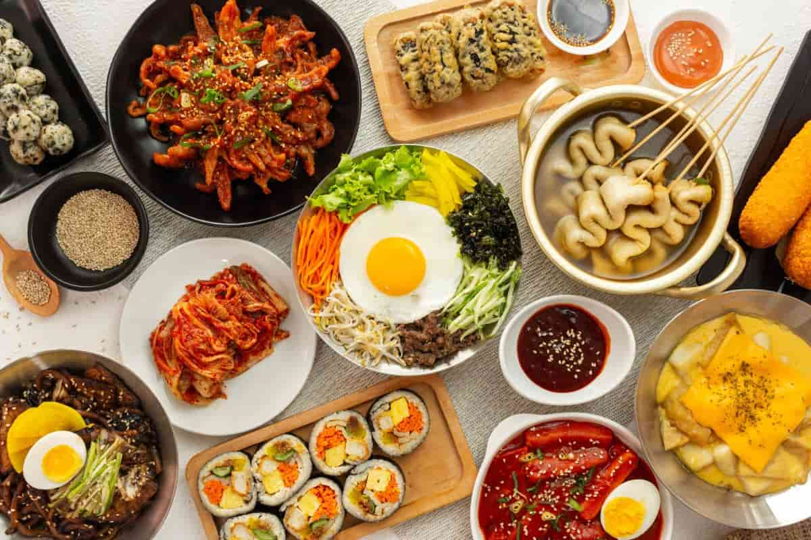
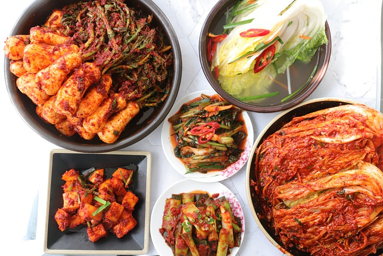
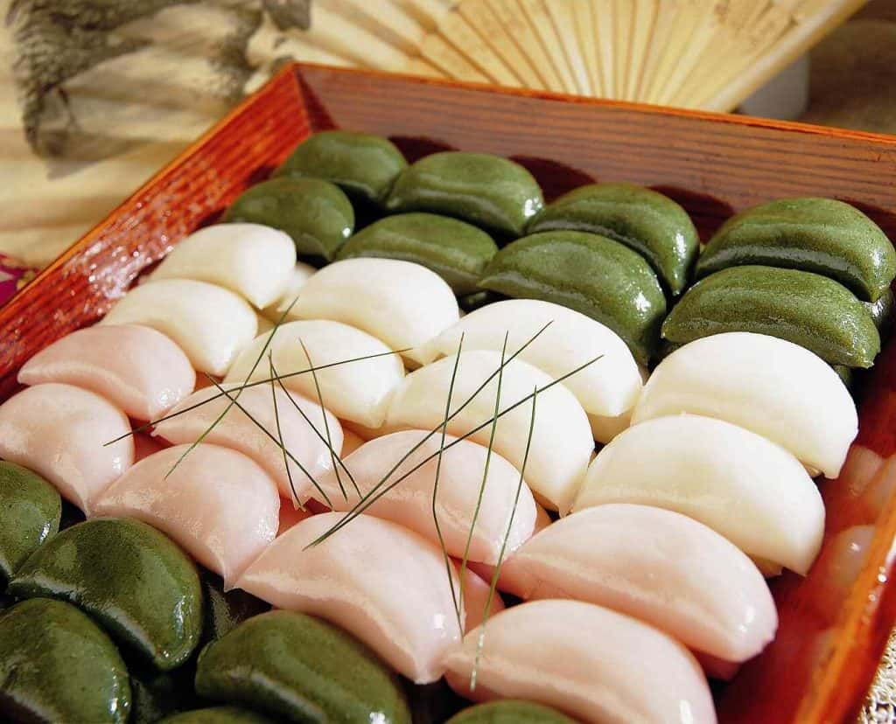
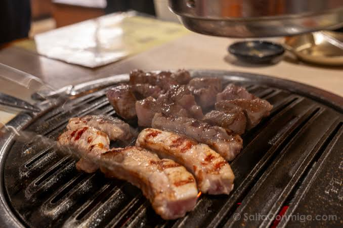

Tipos de Comida Coreana y Costumbres al Comer

Comida Tradicional
Entre los platos más famosos se encuentran el Kimchi, el Bibimbap, el Pibulgogi y el Jopchae.

Comida Callejera
Entre los platos que se pueden encontrar en cualquier lugar de la ciudad, tenemos el Tteokbboki, el Hotteok y el Kimbap, entre otros.

Postres y Bebidas
Como postres están el Bingsu, el Tteok, el Bungeoppang y el Hodu-gwaja. Y en las bebidas tenemos el Sikhye, el Sujeonggwa, el Subak Hwachae y las leches saborizadas. Respecto a los tragos, los más famosos son el Soju y el Makgeolli.

Parrilla Coreana (Gogi-gu-i)
Es una de las experiencias gastronómicas más populares del país, ya que las parrillas se encuentran al centro de la mesa, permitiendo a los comensales asar la carne mientras conversan y pasan un buen rato.

Costumbres al Comer
Nadie en la mesa comienza a comer o a tomar los cubiertos hasta que la persona de mayor edad o jerarquía haya dado el primer bocado, se procura comer al mismo ritmo que los demás por respeto y la comida no se da por terminada hasta que el mayor de la mesa se pone de pie o indica que ha finalizado. Los cubiertos tradicionales son palillos metálicos planos y una cuchara de mango largo. La regla principal es que ambos utensillos no sean sostenidos al mismo tiempo con la misma mano, y nunca deben clavarse los palillos sobre el cuenco de forma vertical. A diferencia de China y Japón, el cuenco debe permanecer sobre la mesa y no levantado o en las manos.